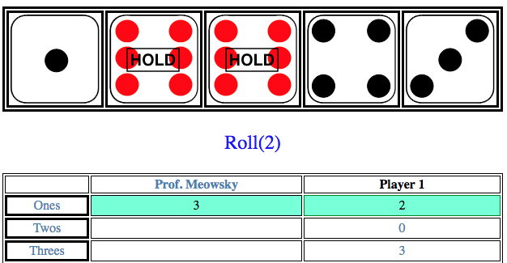

Meowtzee

A single player Yahtzee web app.
A single player Yahtzee web app.
A lightweight tool for searching, sorting, and running linear regressions on fantasy football data from 1970-2019, using data imported from Fantasy Football Data Pros.
Verilog model for a processor for a 16-bit architecture similar to MIPS. Includes a 5-stage pipeline and a floating point ALU. Can process jumps, dependencies, and conditional statements. Includes an ARM-style assembler.
Builds, randomizes, and solves a virtual Megaminx, a 12-face version of the Rubik's Cube, using the A* search algorithm.

TensorFlow machine learning model for optical character recognition classification, built into an existing OCR program created by the University of Kentucky's Professor Raphael Finkel, as part of the UK Senior Design Project.
Collected and analyzed data for the study Using a trust game framework to evaluate attitudes on sharing genomic data, as part of the Vanderbilt Summer Science Academy.